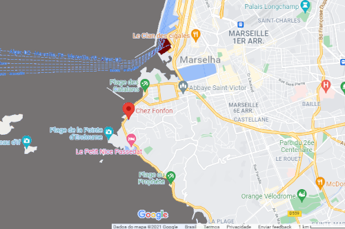

Como chegar
Para chegar ao nosso Restaurante partindo da capital Paris, você pode de carrp de passeio, sendo aproximadamente 7h15min dirigindo, de ônibus o tempo de viagem é de aproximadamente 10h 20min e de tem 3h 19min. Estamos a sua Espera reserver um tempo para vim conhecer está linda cidade e apreciar a culinária do nosso Restaurante, Abraços Ratatouille Chef
Estamos Bem Aqui
